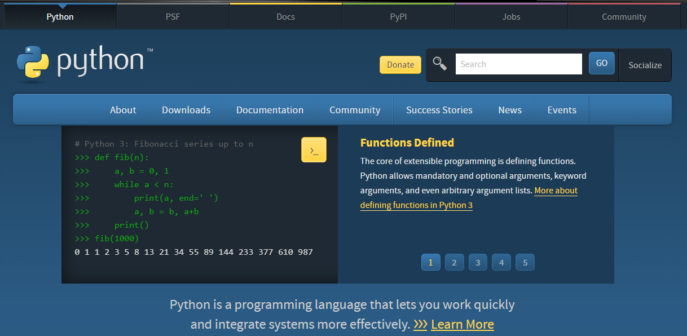
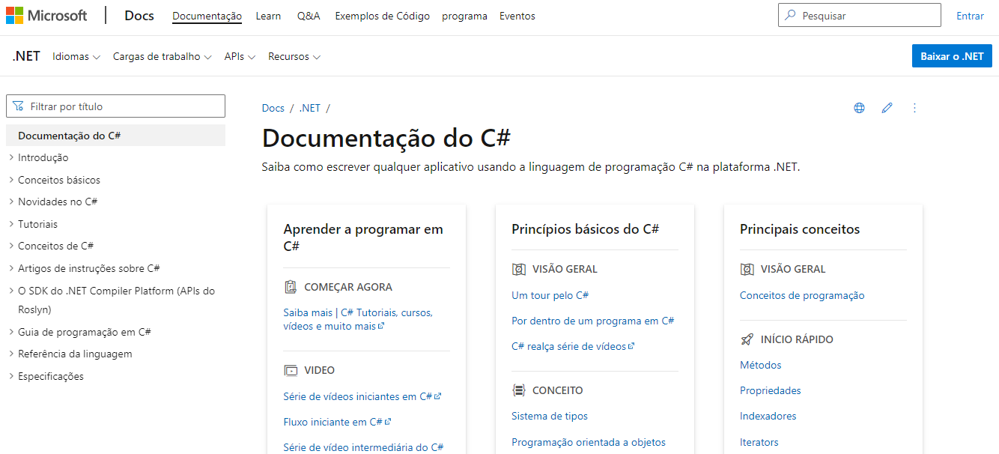
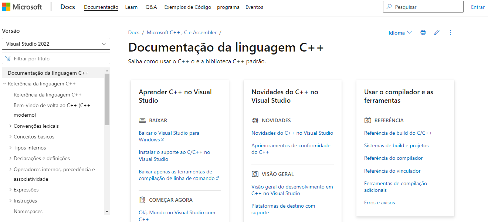
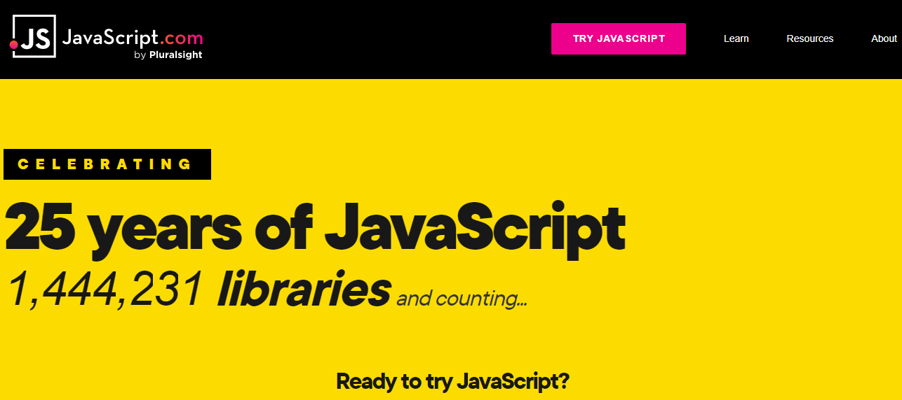
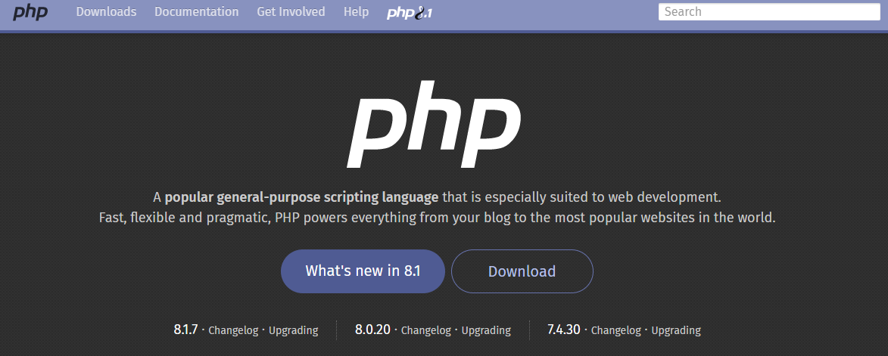
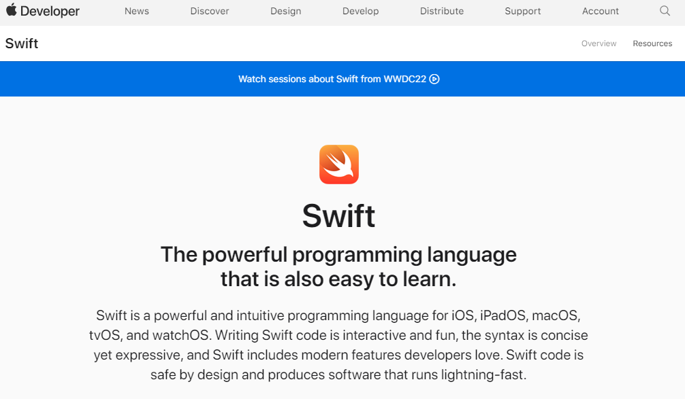
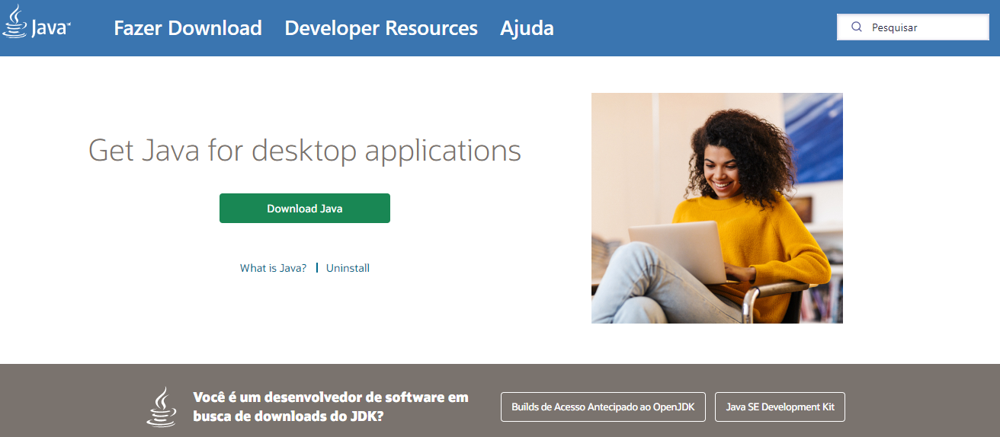
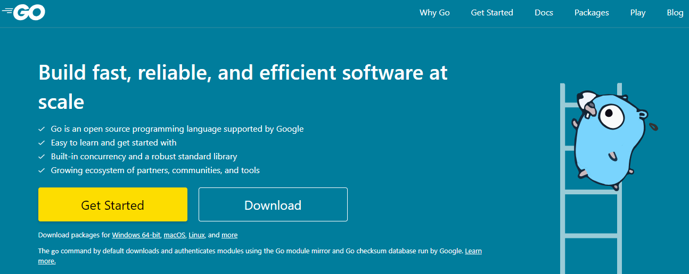
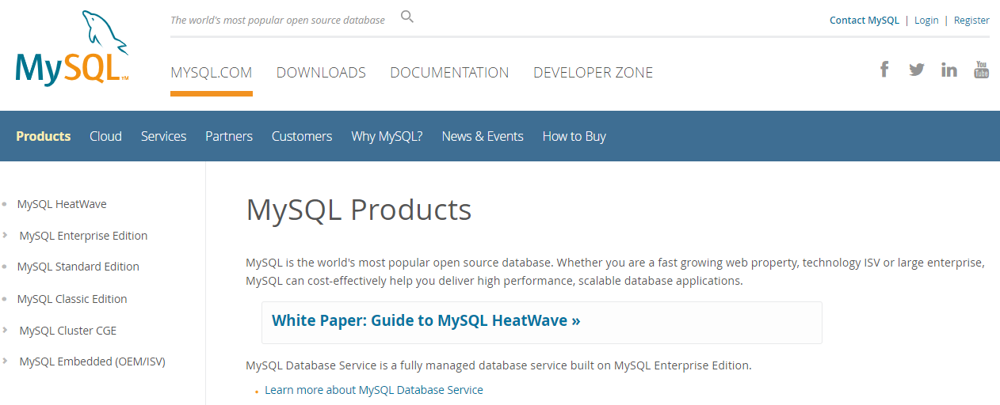
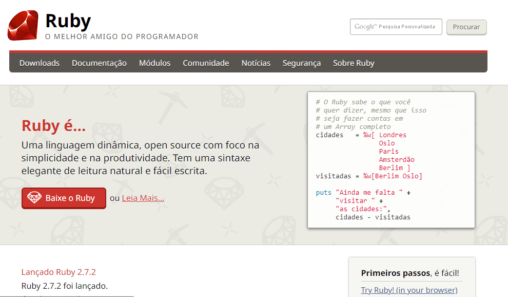

As 10 linguagens de programção mais usadas em 2022
postado 11 dezembro 2022
As linguagens de programação são ferramentas que os programadores usam para criar: sites, aplicativos, jogos e etc. Veja a seguir as 10 Linguagens mais usadas em 2022.
- Python
- C#
- C++
- JavaScript
- PHP
- Swift
- Java
- Go
- SQL
- Ruby
1. Python
Python é uma linguagem de programação de alto nível e para propósitos diversos. Ela pode ser utilizada para múltiplas tarefas, desde a análise e visualização de dados até o desenvolvimento, prototipação e automação web
Leia mais2. C#
C# C é uma linguagem de programação orientada a objetos - um modelo que organiza o design de software ao redor de objetos. A linguagem de programação C# é uma das principais no mercado devido ao seu rápido desempenho e estabilidade melhorada. Essa linguagem de programação também é mais fácil de ser aprendida do que as suas antecessoras, como C e C++, pois possui uma sintaxe mais simples e uma hierarquia de classe bem definida.
Leia mais3. C++
A linguagem de programação C++ é uma versão melhorada da C, e uma das mais populares linguagens na área de ciências da computação. Além disso, sua versatilidade faz com que a C++ seja uma das linguagens de programação mais indicadas para se aprender. Sua natureza rápida e potente permite que desenvolvedores criem aplicações com excelente desempenho, como videogames, softwares gráficos e navegadores web.
Leia mais4. JavaScript
JavaScript, juntamente com HTML e CSS, é a melhor linguagem de programação para aprender desenvolvimento web front-end. 97,8% de todos os sites no mundo utilizam JavaScript para seu desenvolvimento client-side (a interface que é visível para os visitantes).
Leia mais5. PHP
PHP é uma das primeiras linguagens de programação back-end que os desenvolvedores consideram ser essencial aprender. Além disso, o PHP é utilizado por 78,1% de todos os sites na internet, já que é a linguagem primária do WordPress.
Leia mais6. Swift
A linguagem de programação Swift está entre uma das mais recentes a surgir no mercado. Inicialmente, quando foi lançada, a Swift era uma alternativa à Objective-C - a principal linguagem para produtos Apple.
Leia mais7. Java
Java é uma linguagem de programação exclusiva que pertence à Oracle. Trata-se de uma linguagem de programação de alto nível e para propósitos diversos, permitindo que os desenvolvedores criem todo e qualquer tipo de aplicação com facilidade.
Leia mais8. Go
A linguagem de programação Go, ou Golang, foi criada visando o desenvolvimento de APIs, aplicações desktop baseadas em GUI, e aplicações web. Por mais que seja uma linguagem jovem, que recentemente entrou no mercado, a Go é uma das linguagens que mais rapidamente cresce no mundo da programação.
Leia mais9. SQL
A Structured Query Language (SQL) é a melhor linguagem de programação para aprender caso você esteja interessado em ciências de dados e computação estatística. Trata-se de uma linguagem de domínio específico. Ela permite que os programadores manipulem, organizem em queries, e analisem dados armazenados em bancos de dados relacionais.
Leia mais10. Ruby
A Ruby é outra popular linguagem de programação de código aberto. Ela é comumente utilizada no desenvolvimento de aplicações web, mas os programadores também podem utilizar a Ruby para análise de dados e prototipação
Leia maisInformation
Deixe seu contato